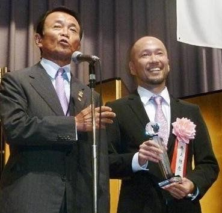

井上雄彦（Inoue Takehiko），曾用名成合雄彦。1967年1月12日在日本九州鹿儿县出生。日本知名漫画家，作品有《篮球飞人》、《紫色的枫》等等。2011年3月日本大地震，他通过手绘漫画《Smile》为受灾民众打气。家庭成员：父母和一个弟弟，已婚。
1987年： 熊本大学中途退学后前往东京，当北条司的助理。
1988年：凭「枫PURPLE」取得手冢赏。
1989年： 於『周刊少年JUMP』（集英社）连载「变色龙」
1990年： 於『周刊少年JUMP』（集英社）连载「SLAMDUNK（男儿当入樽）」
1996年： 不单只大受欢迎，而且还掀起了篮球热潮。
1993年： 把BOB GREEN着的「HANG
TIME」漫画化，并以短篇形式连载。「SLAMDUNK」被改编成电视动画。
1995年：设计篮球鞋「HIGHTIME」，并被选为95年度通产省GOODDESIGN选定商品。
1996年： 在网上连载ONLINE COMIC「BUZZERBEATER（宇宙也入樽）」
1998年：
「SLAMDUNK」单行本在日本国内销量达9000万本，在世界各国销量超过1亿本。(统计直至2000年3月为止)
1967年，日本九州鹿儿岛县出生。
高校时代热衷于篮球，好像初中时也很喜欢剑道，上高中后受篮球部的朋友的“诱惑”加入了篮球队，中学时喜欢的漫画家是水岛新司。
熊本大学文学部入学后向少年JUMP初次投稿，曾经一度被井上试图丢弃的作品居然吸引了编集者的目光。
大学3年级时退学，来到东京，当漫画家北条司的助手。
1988年，当时21岁的井上以《紫色的枫》荣获“手冢奖”登上漫画舞台。紧接着发表了短编《喜欢红色》。
1990年，在《周刊少年JUMP》连载《Slam
Dunk灌篮高手》，单行本在全世界销售量超过了一亿部，并在全日本卷起一股篮球热潮。
1995年，亲自为“ASICS”设计了一款命名为“HIGH TIME”的运动鞋，同年并获得“GOOD
DESIGN”赏。
1996年，在网络上尝试网络连载漫画《BUZZER BEATER（零秒出手）》。
1998年9月起，《周刊Morning》（讲谈社）上连载以宫本武蔵为主人公的古代剧《
浪客行（浪人剑客）》（原作：吉川英治《宫本武蔵》），现在已经有超过800万部的让人惊异的销量！
